roteiro 1
objetivo
Aqui neste primeiro roteiro o nosso objetivo e entender os conceitos básicos sobre uma plataforma de gerenciamento de hardware, além de introduzir os conceitos básicos de redes de computadore. Para atingirmos nossos objetivos, utilizaremos o maas, uma plataforma que gerencia dispositivos em nuvem.
montagem do roteiro
-tarefa1
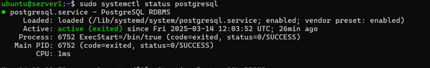
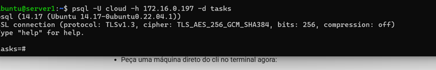
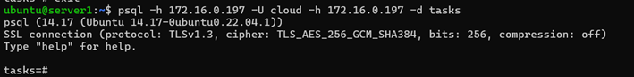
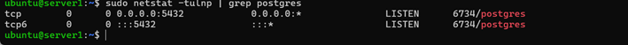
Como é possível observar, para essa primeira tarefa criamos um banco de dados utilizando o PostgreSQL e implementando no server 1, e confirmamos que esse banco está funcionando, acessível na própria server 1 e também a partir de uma conexão vinda da main, operando na porta 6734.
-Tarefa 2
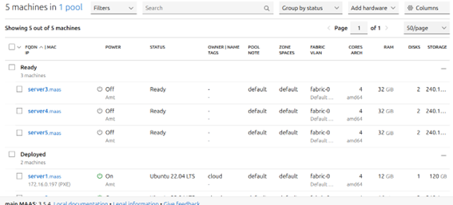 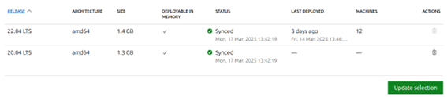 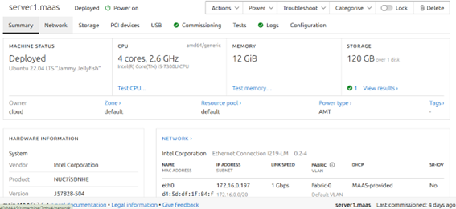 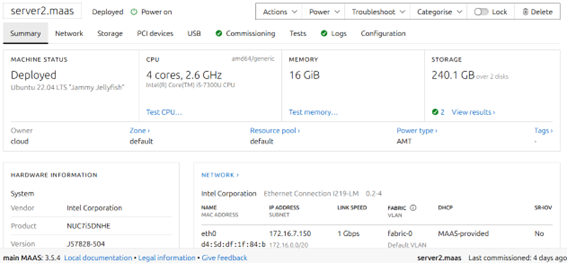 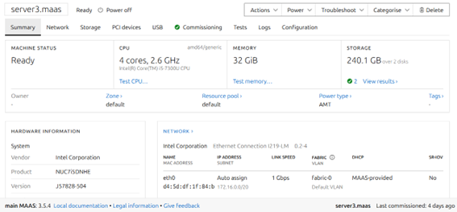 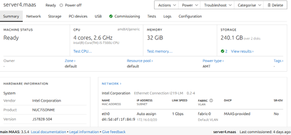 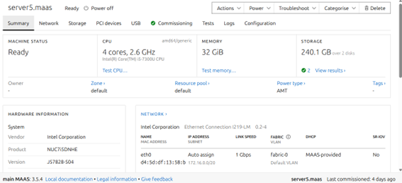 Para essa tarefa 2, nós instalamos o maas e acessamos ele usando o ip http://10.103.1.27:5240/, além de termos sincronizado as imagens e cadastrado as maquinas do server1 ao server5.
-tarefa 3
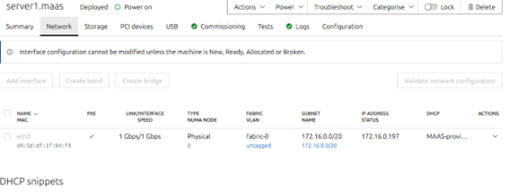 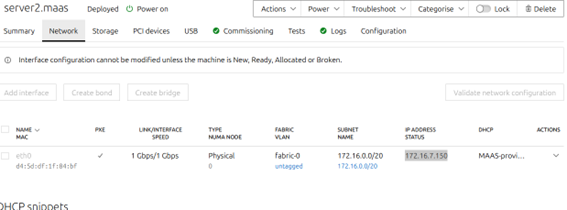 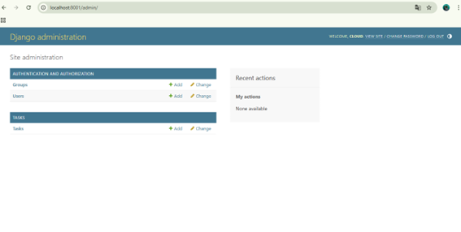 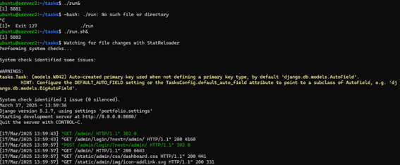 Para essa tarefa nos fizemos deploy do server 2 e criamos um túnel, para acessar o Django, a partir da porta 8001. - para poder instalar o Django eu primeiro entrei na minha maquina server 2 usando o comando “ssh cloud@10.103.1.27 -L 8001: 172.16.7.150:8080”, porem meu Django não estava ainda funcionando, então entrei na pasta tasks utilizando “Cd tasks” eapos isso dentro da pasta tasks, usei o comando “install.sh” e “run.sh” que resolveu o problema da instalação e consegui entar no Django pelo link “http://localhost:8001/admin/”
-tarefa 4
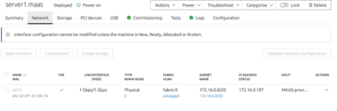 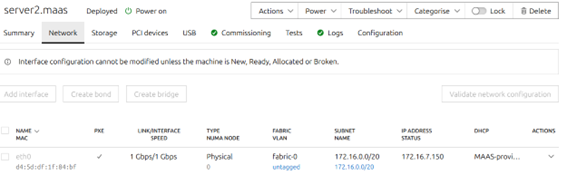 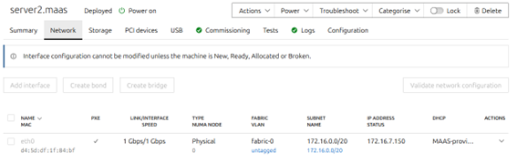 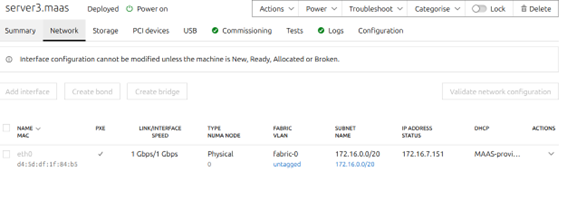 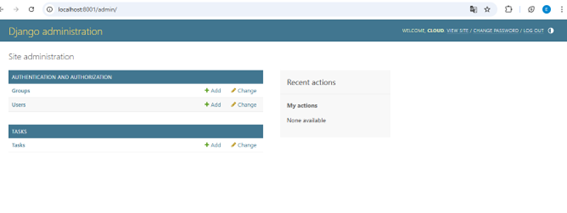 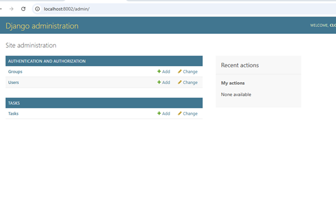 Para esta atividade foi feito um exercício semelhante que fizemos na atividade 3 só que desta vez utilizamos o server 3 e criamos o túnel utilizando a porta 8002. Como e possível observar foi feito deploy do server 3 e agora podemos acessar o django da porta 8002.
-tarefa 5
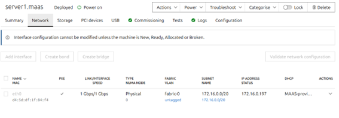 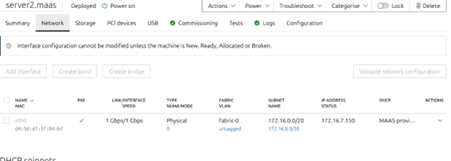 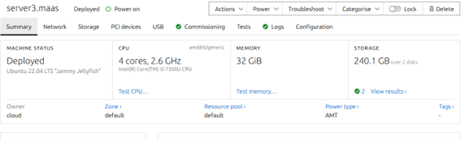 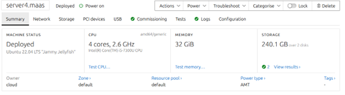 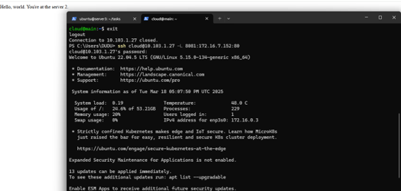 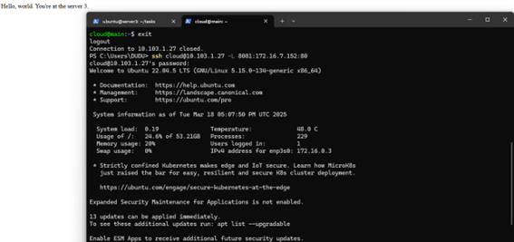 por fim, nessa ultima a tiva utilizamos o deploy no server 4, e modificando alguns arquivos, e crimaos uma ponte utilizando o server 4 que faz um get request dos server 1 e do server 2. Após acessar-mos o ip do server 4 temos um print do server 1 e do server 2.
Discussões
Ao decorrer do lab tive alguns obstáculos, principalmente quando alguma coisa dava errado, e não funcionava como deveria, tinha muita dificuldade para identificar e corrigir os erros, e muitas vezes fui ajudado pelo chat e pelos professores da matéria, contudo no final solucionei todas as minahs duvidas e consegui terminar o lab.
Conclusão
Com a realização desse roteiro, foi possível concluir que redes de computadores e algo extremamente complexo, mas com aprendizado e sanando dúvidas foi possível instalr o maas e manipular as redes de acordo com nossos objetivos.